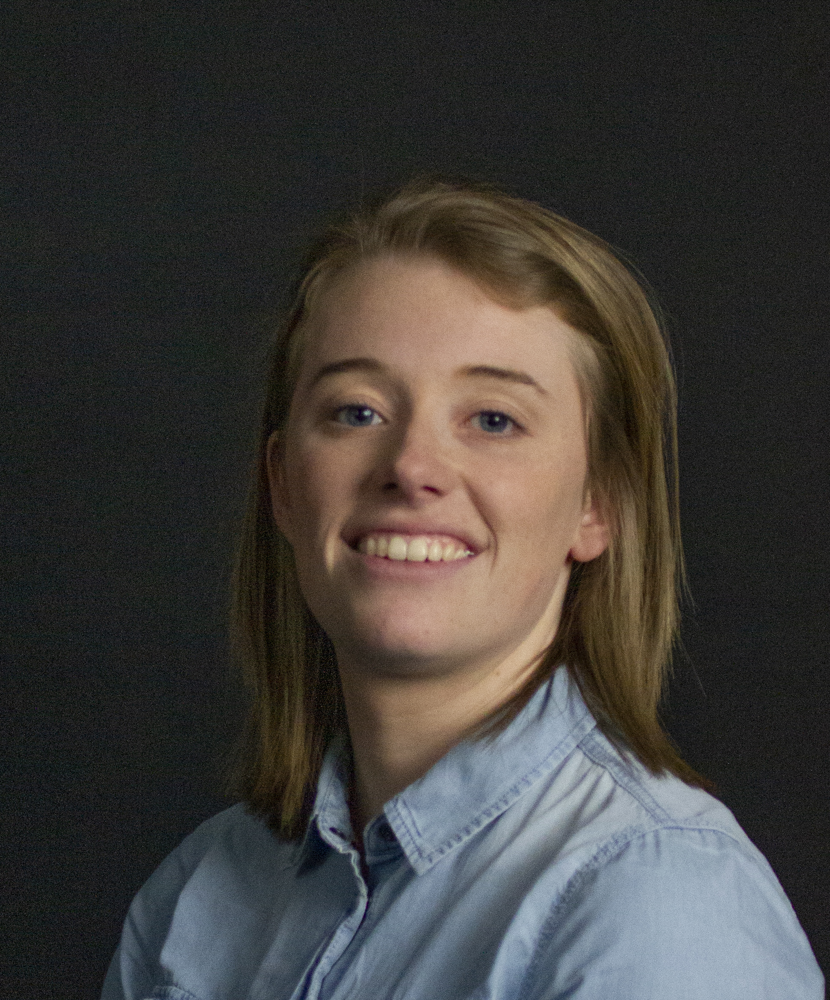
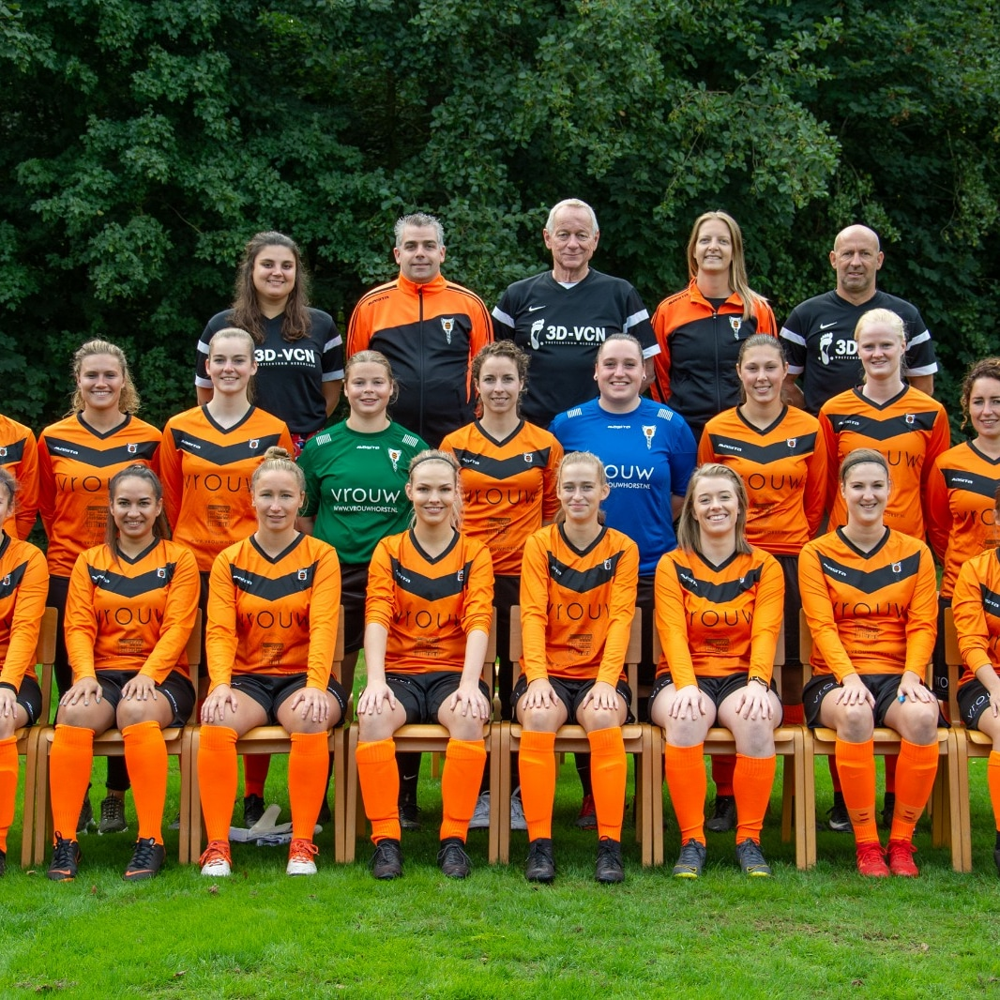
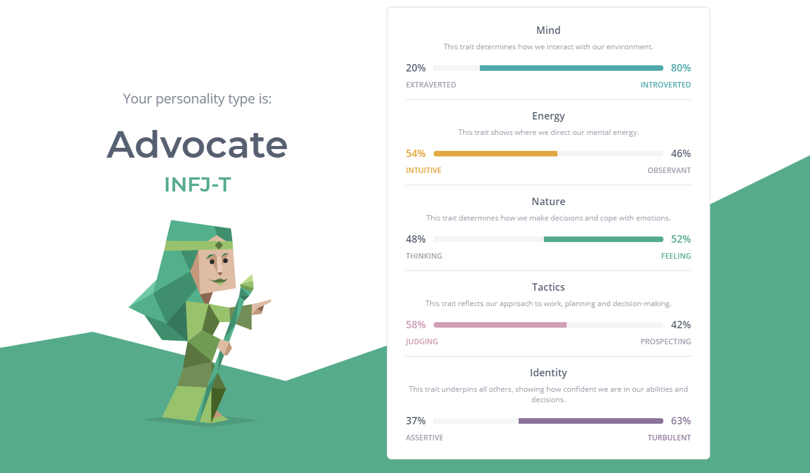

Dit ben ik
Hoi! Mijn naam is Michelle de Wit, ik ben 24 jaar oud en ik woon in
Horst. Op dit moment zit ik in het zevende semester van ICT & Media en volg ik de minor Digitale marketing.
Ik ben tot nu toe in mijn opleiding veel bezig geweest met het maken van ontwerpen en de front-end
development van websites en mobiele applicaties.
Ik heb daarom voor de minor Digitale marketing
gekozen omdat ik nu ook het marketingaspect van het maken van websites wil ontdekken. Ik wil mij
bijvoorbeeld gaan verdiepen in search engine optimalisatie en het werken met Google Analytics.
Buiten school werk ik bij Brik. Brik is een digital design en development bureau in Venlo. Bij Brik ben ik
bezig met het ontwerpen en technisch realiseren van digitale uitingen zoals bijvoorbeeld websites en apps.
In het dagelijks leven heb ik verder als grote passie voetbal, zowel het kijken als het spelen hiervan. Ik
voetbal dan ook drie keer in de week bij RKSV Wittenhorst in het eerste dameselftal.

Uit de persoonlijkheidstest van 16 personalities kwam het persoonlijkheidstype "advocaat" uit de resultaten.
De resultaten van de test komen goed overeen met mijn persoonlijkheid. Ik denk dat ik namelijk zowel
individueel als in groepsverband een harde werker ben en zo ik stapsgewijs mijn doelen probeer te behalen.
Mijn groepsgenoten hebben een andere opleidingsachtergrond dan ik waardoor ik kan leren van de ervaring en
kennis die zij hebben opgedaan in verschillende marketing invalshoeken die tijdens hun opleiding aan bod
zijn gekomen.
